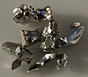

iridium

Definition: Iridium is a chemical element with the symbol Ir and atomic number 77. A very hard, brittle, silvery-white transition metal of the platinum group, it is considered the second-densest naturally occurring metal (after osmium) with a density of 22.56 g/cm3 (0.815 lb/cu in) as defined by experimental X-ray crystallography. It is one of the most corrosion-resistant metals, even at temperatures as high as 2,000 °C (3,630 °F). However, corrosion-resistance is not quantifiable in absolute terms; although only certain molten salts and halogens are corrosive to solid iridium, finely divided iridium dust is much more reactive and can be flammable, whereas gold dust is not flammable but can be attacked by substances that iridium resists, such as aqua regia.
Source: Wikipedia
Wikipedia Page (Something wrong with this association? Let us know.)
Wikidata Page (Something wrong with this association? Let us know.)